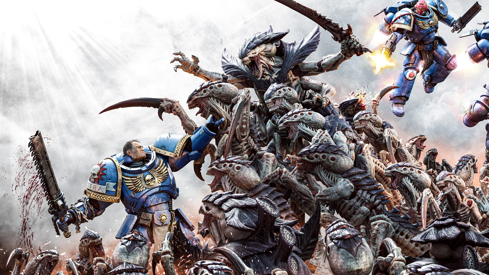
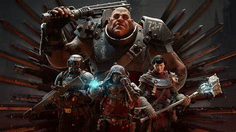
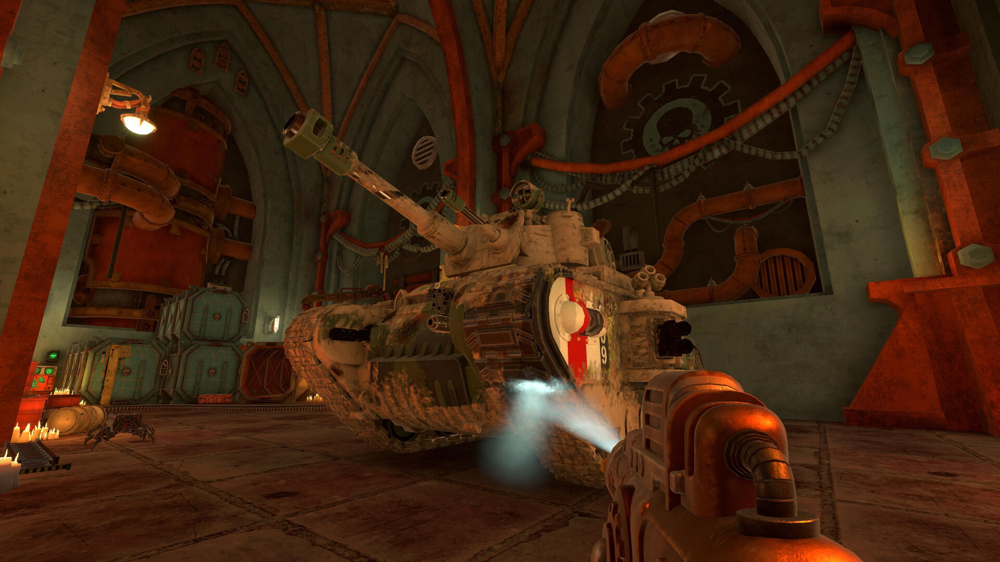

<!DOCTYPE html>
<!--https://getbootstrap.com/docs/5.3/getting-started/introduction/-->
<!--https://bootstrap-cheatsheet.themeselection.com/-->
<!--https://blog.getbootstrap.com-->
<!---->
<html lang="en"></html>

<head>
    <meta charset="UTF-8">
    <meta name="viewport" content="width=device-width, initial-scale=1.0">
    <link href="https://cdn.jsdelivr.net/npm/bootstrap@5.3.3/dist/css/bootstrap.min.css" rel="stylesheet" integrity="sha384-QWTKZyjpPEjISv5WaRU9OFeRpok6YctnYmDr5pNlyT2bRjXh0JMhjY6hW+ALEwIH" crossorigin="anonymous">
  <script src="https://cdn.jsdelivr.net/npm/bootstrap@5.3.3/dist/js/bootstrap.bundle.min.js" integrity="sha384-YvpcrYf0tY3lHB60NNkmXc5s9fDVZLESaAA55NDzOxhy9GkcIdslK1eN7N6jIeHz" crossorigin="anonymous"></script>
    <title>Bootstrap Example</title>
</head>
<body>
<div class="container-fluid py-5 text-start text-sm-center">
    <h1 class= "display-5 fw-bold"> My first bootstrap page  </h1>
    <p class= "col-md-11.5 fs-4"> Rezize this repsonsive page to see the effect</p>
</div>

<nav class="navbar navbar-expand-lg navbar-dark bg-dark">
    <div class="container-fluid">
      <a class="navbar-brand" href="#"></a>
      <button class="navbar-toggler" type="button" data-bs-toggle="collapse" data-bs-target="#navbarSupportedContent" aria-controls="navbarSupportedContent" aria-expanded="false" aria-label="Toggle navigation">
        <span class="navbar-toggler-icon"></span>
      </button>
      <div class="collapse navbar-collapse" id="navbarSupportedContent">
        <ul class="navbar-nav me-auto mb-2 mb-lg-0">
          <li class="nav-item">
            <a class="nav-link active" aria-current="page" href="#">Home</a>
          </li>
          <li class="nav-item">
            <a class="nav-link" href="#">Design</a>
          </li>
          <li class="nav-item">
            <a class="nav-link" href="#">Play Game</a>
          </li>
          <li class="nav-item dropdown">
            <a class="nav-link dropdown-toggle" href="#" role="button" data-bs-toggle="dropdown" aria-expanded="false">
              Games
            </a>
            <ul class="dropdown-menu">
              <li><a class="dropdown-item" href="#">Fortnite</a></li>
              <li><a class="dropdown-item" href="#">Rachet & Clank: Rift Apart</a></li>            
              <li><a class="dropdown-item" href="#">Splatoon 3</a></li>
            </ul>
          </li>
          <li class="nav-item">
           
          </li>
        </ul>
        <form class="d-flex" role="search">
          <input class="form-control me-2" type="search" placeholder="Search" aria-label="Search">
          <button class="btn btn-outline-success" type="submit">Search</button>
        </form>
      </div>
    </div>
  </nav>


  <!-- make a grid-->
<div class-container-fluid mt-3>
    <div class="row">
    <div class ="col-sm-4"><h3 style ="text-align: center">Space Marine 2</h3><p>
        Space Marine 2 is a third-person shooter set in the Warhammer 40,000 universe. As a Space Marine, players engage in intense battles against vile hordes using deadly abilities, a Chainsword, and a powerful ranged arsenal. The game is a direct sequel to Warhammer 40,000: Space Marine from 2011 and is set during the Era Indomitus, following the return of Primarch Roboute Guilliman and the Indomitus Crusade to reclaim lost worlds and restore stabilty.
    </p>
    <p>
        A tendril of the Tyranids' Hive Fleet Leviathan invaded the Imperial Recidious System in the Segmentum Pacificus as part of the Fourth Tyrannic War. Archmagos Nozick Beta-12 of the Adeptus Mechanicus had called for aid to defend the Jungle World of Kadaku in the system and to safeguard the classified "Project Aurora" located there.
    </p> </div>
    
    <div class ="col-sm-4"><h3 style ="text-align: center">Darktide</h3><p>
        Darktide is a first-person co-op shooter, set in the grimdark universe of Warhammer 40K and developed by Fatshark Games.
    </p>
    <p>
        Invaded by the traitorous soldiers of the Moebian 6th, the sprawling hive city of Tertium stands on the brink of destruction. The only thing standing between these Chaos-worshiping heretics and victory, is the mysterious Inquisitor Grendyl and his warband of conscripted convicts. Freed to serve the Emperor’s Light in this darkest of hours, you are Tertium’s last line of defense.
    </p>  </div>
    <div class ="col-sm-4"><h3 style ="text-align: center">Powerwash Simulator</h3> <p>
        PowerWash Simulator is a simulation game where players build their own power washing business and blast away dirt and grime. The game focuses on player relaxation and escapism
    </p>
    <p>
        The Warhammer 40K Special Pack for PowerWash Simulator will transport players to a new area in Mars' iconic Ring of Iron, where they can cleanse a wide variety of units and machinery from Warhammer 40K. These include massive tanks, bristling mechs, and other grandiose tools of war. The goal is to restore them for their next deadly missions.
    </p> </div>

    </div>
</div>

<div id="carouselExampleCaptions" class="carousel slide">
    <div class="carousel-indicators">
      <button type="button" data-bs-target="#carouselExampleCaptions" data-bs-slide-to="0" class="active" aria-current="true" aria-label="Slide 1"></button>
      <button type="button" data-bs-target="#carouselExampleCaptions" data-bs-slide-to="1" aria-label="Slide 2"></button>
      <button type="button" data-bs-target="#carouselExampleCaptions" data-bs-slide-to="2" aria-label="Slide 3"></button>
    </div>
    <div class="carousel-inner">
      <div class="carousel-item active">
        
        <div class="carousel-caption d-none d-md-block">
          <h5>Space Marine 2</h5>
          <p>A game by Saber Interactive.</p>
        </div>
      </div>
      <div class="carousel-item">
        
        <div class="carousel-caption d-none d-md-block">
          <h5>Darktide</h5>
          <p>A game by Fatshark.</p>
        </div>
      </div>
      <div class="carousel-item">
        
        <div class="carousel-caption d-none d-md-block">
          <h5>Powerwash Simulator: 40k DLC</h5>
          <p>A game made by FuturLab</p>
        </div>
      </div>
    </div>
    <button class="carousel-control-prev" type="button" data-bs-target="#carouselExampleCaptions" data-bs-slide="prev">
      <span class="carousel-control-prev-icon" aria-hidden="true"></span>
      <span class="visually-hidden">Previous</span>
    </button>
    <button class="carousel-control-next" type="button" data-bs-target="#carouselExampleCaptions" data-bs-slide="next">
      <span class="carousel-control-next-icon" aria-hidden="true"></span>
      <span class="visually-hidden">Next</span>
    </button>
  </div>

  <div class="card" style="width: 300px;">
    
    <div class="card-body text-center">
      <h5 class="card-title">Robbie Kettles</h5>
      <p class="card-text">Yap yap 40k go brr.</p>
      <a href="https://www.warhammer.com/en-GB/home" class="btn btn-primary">Click!</a>
    </div>
  </div>

  <div class="accordion" id="accordionExample">
    <div class="accordion-item">
      <h2 class="accordion-header">
        <button class="accordion-button" type="button" data-bs-toggle="collapse" data-bs-target="#collapseOne" aria-expanded="true" aria-controls="collapseOne">
         Robbies favourite Warhammer lore and things!
        </button>
      </h2>
      <div id="collapseOne" class="accordion-collapse collapse show" data-bs-parent="#accordionExample">
        <div class="accordion-body">
          Konrad Curze of the Night Lords is my favourite Traitor Primarch, my Loyalist favourite is Lion El Jonson of the Dark Angels.
        </div>
      </div>
    </div>
    <div class="accordion-item">
      <h2 class="accordion-header">
        <button class="accordion-button collapsed" type="button" data-bs-toggle="collapse" data-bs-target="#collapseTwo" aria-expanded="false" aria-controls="collapseTwo">
          Warhammer thing 2!
        </button>
      </h2>
      <div id="collapseTwo" class="accordion-collapse collapse" data-bs-parent="#accordionExample">
        <div class="accordion-body">
          An older but funnier piece of lore is a group of Orks not dying, simply by repeating "Im a tank" at an Imperial gun line.
        </div>
      </div>
    </div>
    <div class="accordion-item">
      <h2 class="accordion-header">
        <button class="accordion-button collapsed" type="button" data-bs-toggle="collapse" data-bs-target="#collapseThree" aria-expanded="false" aria-controls="collapseThree">
          My favourite quote
        </button>
      </h2>
      <div id="collapseThree" class="accordion-collapse collapse" data-bs-parent="#accordionExample">
        <div class="accordion-body">
          <strong>It is not enough.</strong> We stand in the dust at the end of centuries of useless sin and endless failure. The Legion was poisoned and we sacrificed an entire world to cleanse it. We failed. We are the sons of the only primarch to hate his own legion. There, again, we failed. We swore vengeance on the Imperium, yet we run from every battle where we don't possess overwhelming force over a crippled enemy. We fail, again and again and again. Have you ever fought a battle you'd struggle to win, with no hope of running away? Have any of us? Have you ever, since the Siege of Terra itself, drawn a weapon with the knowledge you might die? I will not see my life whored away without meaning. Do you hear me? Do you understand me, prince of cowards? I want vengeance against a galaxy that hates us. I want Imperial worlds to cower when we draw near. I want the weeping of this Empire's souls to reach all the way to Holy Terra, and the sound of suffering will choke the corpse-god on his throne of gold. I will cast a shadow across this world. I will burn every man, woman and child so the smoke from the funeral pyres eclipses the sun. With the dust that remains, I will take the Echo of Damnation into the sacred skies above Terra, and rain the ashes of twenty million mortals down onto the Emperor's palace. Then they will remember us. Then they will remember the Legion they once feared." - Talos Valcoran
        </div>
      </div>
    </div>
  </div>

</body>
</html>